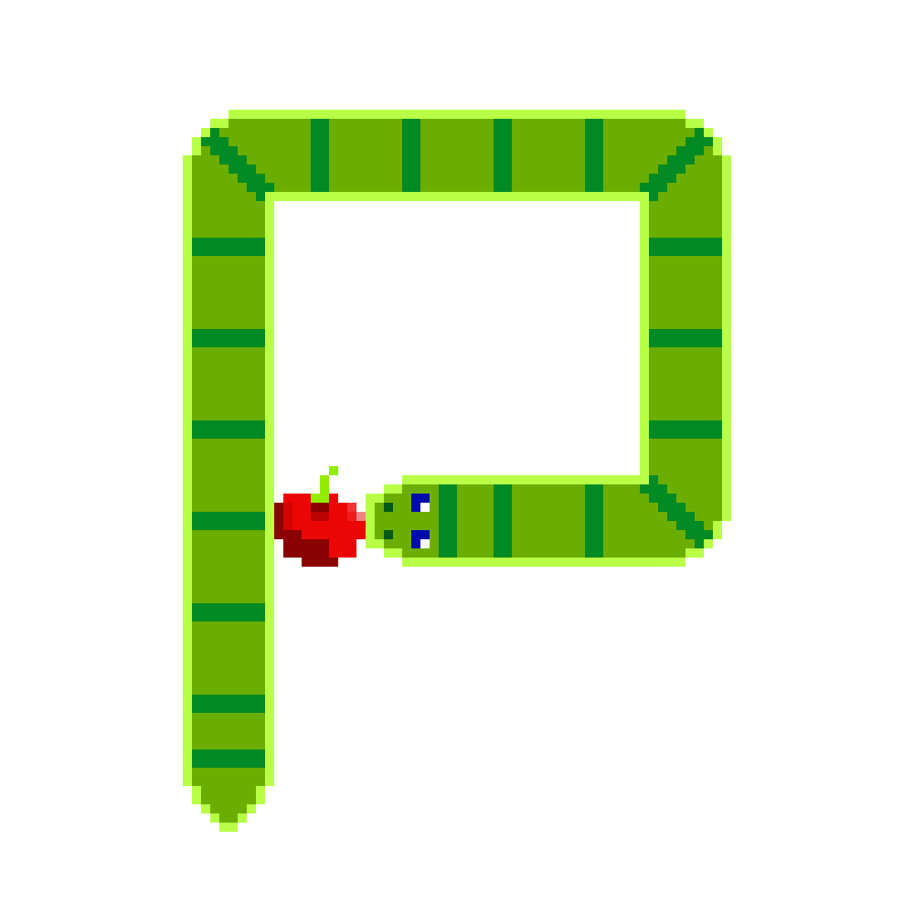

About
What is Simple GameDev?
This page contains a series of small games, some are work in progress, others are simple products. The website itself acts as a cumulative project to show the knowledge I have aquired during my first quarter at ACS.
Why?
From playing to making, games have been a passion of mine from the very beginning. With the tools I've aquired from the ACS program, I've been able to explore new game programming concepts and make functional prototypes to play and enjoy all while refining my coding skills.
Phaser and Pygame
I started with the Pygame API for its rendering and math capabilities allowing me to create some great game bases. Python's accessablity made testing concepts and making features quick and easy. With time though, the lack of modern support for the API, substantial boiler plate, and difficulty to share drove me to switch to Phaser. Although not as quick to code, the Phaser API for Javascript boasts incredible functionaliy, more resources, and ridiculously easy shareablilty. All these factors plus the drive to push myself into new challenges made Phaser the clear choice for me.
All source code can be found on my GithubInstructions
Setting Up Pygame
- Ensure your device has python installed
- Check your Python version - Download and store the Github Repo of your desired game
- Using Github - Navigate to the folder the game is stored in with the command line
- How to use Command Line - Create and activate a virtual environment
- Making a Virtual Environment - Use "pip install pygame" to activate pygame
- How to use pip - Run the python file with your perfered editor
- Now everything should be up and running!
Setting Up Phaser
- Click your favorite game
- Enjoy!
Phaser Games
-
Tower Defense
Tower Defense Game Tower Defense Repo
Pygame Games
-

Python Snake
Python Snake Repo -
Starfall
Starfall Repo -
Simple RPG
Simple RPG Repo